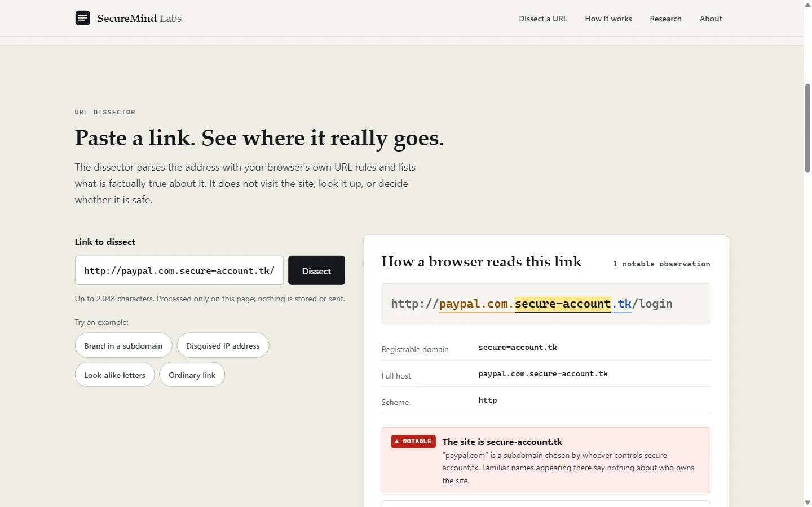

PhishGuard
A phishing-URL classifier that scored 95.2% in a course project, the re-evaluation that showed why that number misleads, and the hardened app and open research site that came out of it.
Two numbers
Logistic-regression accuracy on a random 80/20 split of a 10,000-URL benchmark. The headline of the course project.
Share of phishing URLs the deployed demo model catches on held-out websites from a public dataset (PhiUSIIL), at its default threshold.
Both numbers are real, and they describe different models measured in different ways. The first is a benchmark model scored on a random split of the same dataset it was trained on. The second is the prototype that the public demo actually runs, trained on synthetic URLs and scored in a later re-evaluation where no website appears in both training and testing. A demo that displays the first kind of number invites more trust than the second kind of number supports. Closing that gap, honestly, is what most of this project became.
The course project
The original goal was to detect phishing links from the URL alone, with few false positives. Work was split three ways; my part was the dataset and feature-extraction stages, while teammates owned model training and the report visuals.
The models were trained on a public benchmark of 10,000 URLs, balanced between phishing and legitimate, described by 48 precomputed lexical and page-structure features such as dot count, subdomain depth, hostname length and the presence of sensitive words. Four classifiers were compared on the same 2,000-URL held-out test set:
| Model | Accuracy | Precision | Recall | F1 | ROC-AUC |
|---|---|---|---|---|---|
| Logistic regression | 0.952 | 0.945 | 0.960 | 0.952 | 0.987 |
| SVM | 0.969 | 0.962 | 0.977 | 0.969 | 0.995 |
| Random forest | 0.984 | 0.984 | 0.983 | 0.984 | 0.999 |
| XGBoost | 0.986 | 0.985 | 0.987 | 0.986 | 0.999 |
Logistic regression scored 0.941 ± 0.006 in five-fold cross-validation, consistent with its test score. On this benchmark the problem looks nearly solved. The next stage tested whether that holds when the model meets websites it has not seen.
Re-evaluating it properly
I rebuilt the evaluation as a reproducible pipeline on two licence-checked public datasets: PhiUSIIL (235,349 URLs after cleaning) and Hannousse and Yahiouche (11,424 URLs, collected in 2020).
- Download and verifyHTTPS only, size-capped, every file pinned by SHA-256. URLs inside the data are treated as text and never requested.
- CleanRejected rows, duplicates and URLs with conflicting labels are counted, not silently dropped.
- Split by website70/15/15 by registrable domain using the Public Suffix List, so no site appears in two splits. The list implementation passes its official test vectors.
- Select on validation onlyModel family and decision threshold are chosen on validation data; each test set is scored once. Confidence intervals come from a bootstrap that resamples whole domains.
- Save safelyModels are saved as JSON plus NumPy arrays loaded with
allow_pickle=False, and must reproduce scikit-learn's predictions exactly before they are written.
What it found
One dataset gave the answer away. Every legitimate URL in PhiUSIIL is a bare https://www. homepage. A one-line rule with no machine learning scores F1 0.996 there, and 0.754 on the other dataset. Any model trained on full PhiUSIIL URLs can learn that shortcut, so the main candidate reads only the hostname.
Strong on familiar data, much weaker on new data. A character n-gram model on hostnames ranks phishing clearly better than the demo model on held-out PhiUSIIL domains. On a dataset it never saw, the advantage nearly disappears, and the threshold tuned for 1% false positives produces 6.2%.
| Test set | Hostname candidate | Current demo model |
|---|---|---|
| PhiUSIIL, held-out domains (35,816 URLs) | 0.919 (0.902–0.935) | 0.848 (0.809–0.885) |
| Hannousse, different dataset (9,625 URLs) | 0.741 (0.711–0.772) | 0.717 (0.682–0.751) |
The conclusion written into the model card is that neither model is ready to make a security decision. The candidate stays experimental, and the live site says so next to every number.
Hardening the app
The Streamlit demo accepts arbitrary text from the internet, so it was treated as an attack surface.
- Input validation: http and https only with no silent scheme assumption; control characters, bidirectional-text characters, whitespace and backslashes rejected; a 2,048-character limit; error messages that never echo the input.
- Supply chain: every dependency pinned in a universal lock file with SHA-256 hashes for every published file; installs use
--require-hashes, binary wheels only, and no dependency resolution at install time. - CI on Linux and Windows: gitleaks over every commit (with the tool's own checksum verified), workflow linting, a lock-freshness check, pip-audit, Bandit, a full compile and the test suite.
# the checks CI runs, reproducible locally
python -m compileall -q -f .
python -m pytest -q
python -m pip_audit --require-hashes --disable-pip -r requirements-lock.txt
python -m bandit -q -ll -r app.py securemind
gitleaks git --no-banner --redact .
All 345 tests passed when re-run locally for this case study in November 2026.
The research site
The public site, securemindlabs.com, deliberately does not call the model. Its main tool is a URL dissector that runs entirely in the visitor's browser and reports facts about a link: the scheme, the real registrable domain, disguised IP addresses, hidden credentials, look-alike characters and embedded redirects. It never fetches, resolves or scores the URL, and nothing is sent anywhere.

The decision not to expose the model was recorded with its reasons: the live model is weak on unseen domains, the better candidate is not approved for production, and a public inference API would need rate limiting, a logging policy and its own threat model. The site is a static Vite build on Cloudflare Pages with security headers and no cookies or analytics.
What I would do next
- DoneCourse pipeline, hardened demo, hash-locked dependencies, CI, domain-split evaluation, model card, live research site
- OpenPublish the evaluation outputs in the public repository so every number on the site can be checked; move research-only XGBoost out of the runtime install (with its CUDA dependency, about 71% of the Linux wheel set)
- PlannedPer-domain weighting, time-based evaluation on newer data, and only then a decision on replacing the demo model